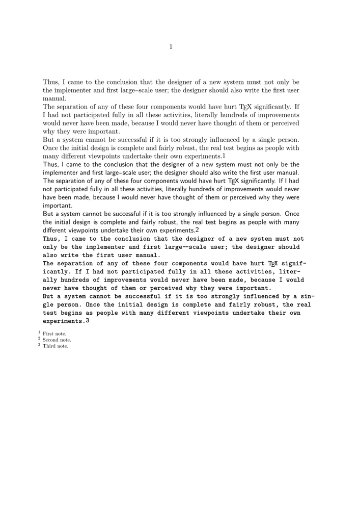

Contents
Summary
The command \setupnote is used for the design of the (foot)note marker in text.
Settings
| \setupnote[...,...][...=...,...] | |
| [...,...] | name |
| interaction | yes no number text all |
| symbolcommand | oneargument |
| textcommand | oneargument |
| indicator | yes no |
| textseparator | command |
| width | dimension |
| height | dimension |
| distance | dimension |
| rulecommand | command |
| rule | on off normal left right command paragraph |
| split | tolerant strict verystrict number |
| factor | number |
| location | text page high bottom none columns firstcolumn lastcolumn |
| next | command |
| n | number |
| rulecolor | color |
| rulethickness | dimension |
| setups | name |
| interlinespace | name |
| paragraph | yes no |
| before | command |
| after | command |
| inbetween | command |
| scope | page |
| columndistance | dimension |
| continue | yes no |
| alternative | grid fixed columns note none |
| criterium | page |
| bodyfont | see \setupbodyfont |
| align | see \setupalign |
| textstyle | style command |
| textcolor | color |
| anchor | next |
| spacebefore | see \blank |
| spaceinbetween | see \blank |
| ...=...,... | inherits from \setupframed |
| Option | Explanation | ||
|---|---|---|---|
| interaction |
|
||
| textcommand |
|
||
| distance |
|
||
| rulecommand |
|
||
| rule |
|
||
| split |
|
||
| location |
|
||
| n |
|
||
| rulecolor |
|
||
| rulethickness |
|
||
| before |
|
||
| columndistance |
|
||
| alternative |
|
||
| bodyfont |
|
||
| textstyle |
|
||
| textcolor |
|
||
Description
The option
scope
is ignored. (ML 2019-07-22 "Place footnote after reference")
\setupnote affects the number inside the body text, but \setupnotation affects the text at the bottom of the page (footnote or endnote).
You can also use options of \setupcounter (e.g. conversion and prefix) and \setupframed.
Examples
Custom notes
-
\define[1]\MyNoteTextcommand {\offset[y=-0.2ex]{#1}} \definenote [Mynote] \setupnote [Mynote] [location=text, textstyle=, textcommand=\MyNoteTextcommand] \starttext \input{knuth}\Mynote{First note.} \startstyle[style=\ss] \input{knuth}\Mynote{Second note.} \stopstyle \startstyle[style=\tt\bf] \input{knuth}\Mynote{Third note.} \stopstyle \placenotes[Mynote] \stoptext
- 